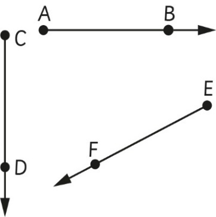

Zoezi la 1
1.
Chora vipande vya mistari vyenye urefu ufuatao:
(a)
(b)
(c)
(d)
(e)
(f)
(g)
2.
3.
Kipi kati ya vifuatavyo kina wakilisha kipande cha mstari?
4.
Ipi ni mifano ya vipande vya mstari katika maisha yetu ya kila siku?
Mwale
Mwale ni kipande cha mstari kinachoendelezwa upande mmoja bila kikomo.
Upande unaoendelea bila kikomo huwekewa mshale.
Mifano ya miale ni kama inavyooneshwa katika kielelezo kifuatacho:

Mwale huandikwa na alama inayowakilisha mwale.
Kwa mfano mwale AB huandikwa na mwale BA huandikwa .